Lesson 3: Advanced Visualization Techniques
Yichao Hua
2024-11-29
3.Visualization.RmdIntroduction
In our previous lesson, we created a PBMC object, completed clustering, and performed annotation. This serves as the foundation for all our subsequent analyses. In this lesson, we’ll systematically explore various visualization techniques using SeuratExtend to create high-quality, publication-ready figures.
First, let’s set your working directory to where we’ll store all course materials. If you followed Lesson 1, this would be:
# Set working directory to the course folder created in Lesson 1
# If you used a different location, replace this path with your chosen directory
setwd("~/Documents/single-cell-course")Let’s start by loading the necessary packages and our previously saved PBMC object:
1. Create an Enhanced Dimensional Reduction Plot
In Seurat, dimension reduction plots such as UMAP are typically
created using DimPlot for discrete variables and
FeaturePlot for continuous variables.
SeuratExtend simplifies this process with
DimPlot2, which does not require differentiation between
variable types. This function automatically recognizes the type of input
parameters, whether discrete or continuous. Additionally,
DimPlot2 introduces numerous extra parameters to enrich the
customization of the plots.
Basic Usage
To generate a basic dimension reduction plot, simply call
DimPlot2 with your Seurat object:
DimPlot2(pbmc)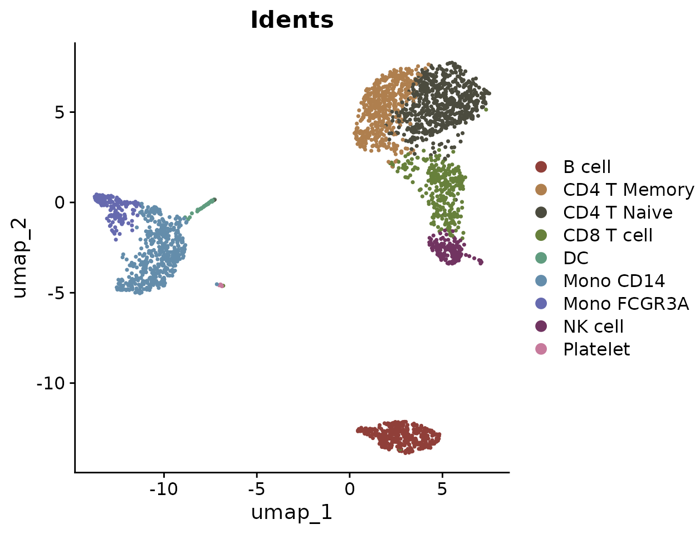
Visualizing Different Variables
DimPlot2 can handle both discrete and continuous
variables seamlessly. Here’s how to input different variables into the
plot:
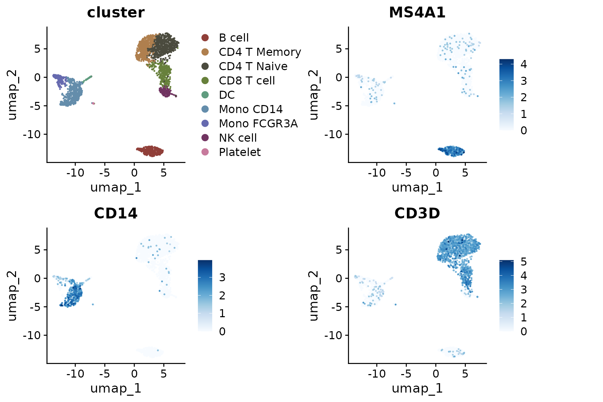
Splitting by Variable
You can also split the visualization by a specific variable, which is particularly useful for comparative analysis across conditions or identities. In our current PBMC object, we only have one sample. Let’s create a new column in the metadata to simulate a scenario with two samples for demonstration purposes:
set.seed(42) # For reproducibility
pbmc$sample <- sample(c("sample1", "sample1", "sample2"), size = ncol(pbmc), replace = TRUE)
table(pbmc$sample) # Check the distribution##
## sample1 sample2
## 1796 904Now, let’s create a split plot:
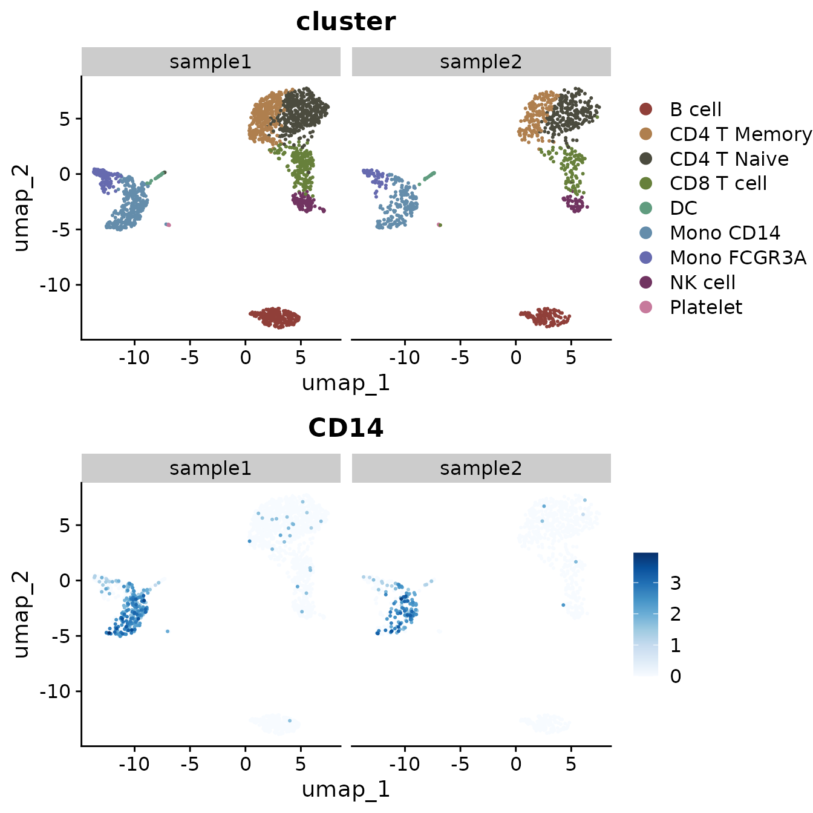
Highlighting Specific Cells
To highlight cells of interest, such as a specific cluster, you can define the cells explicitly and use them in your plot:
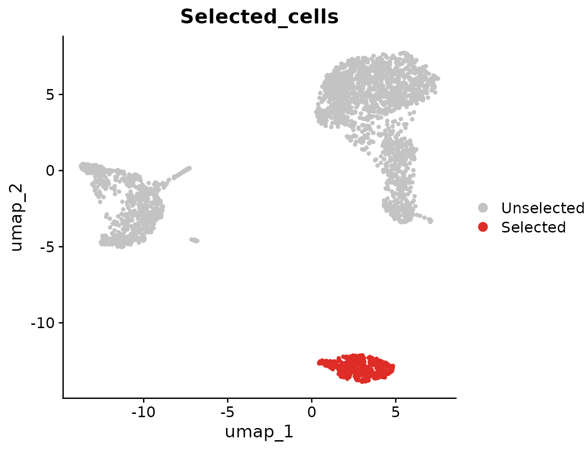
Advanced Customization
For each variable, you can specify custom colors, adjust themes, and more. For detailed information on color customization, refer to the Explore Color Functions section:
DimPlot2(
pbmc,
features = c("cluster", "sample", "CD14", "CD3D"),
cols = list(
"cluster" = "light",
"CD14" = "D",
"CD3D" = c("#EEEEEE", "black")
),
theme = NoAxes())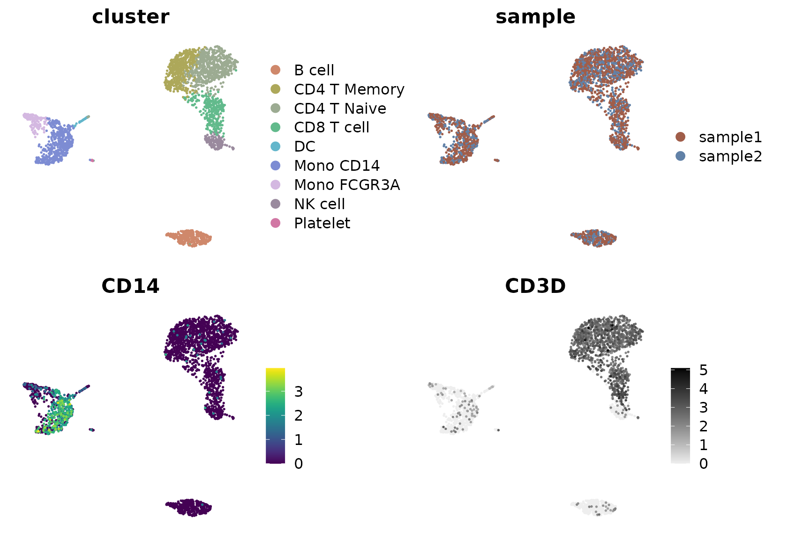
Adding Labels and Boxes
To further enhance the plot, you can add labels and bounding boxes to clearly delineate different groups or points of interest:
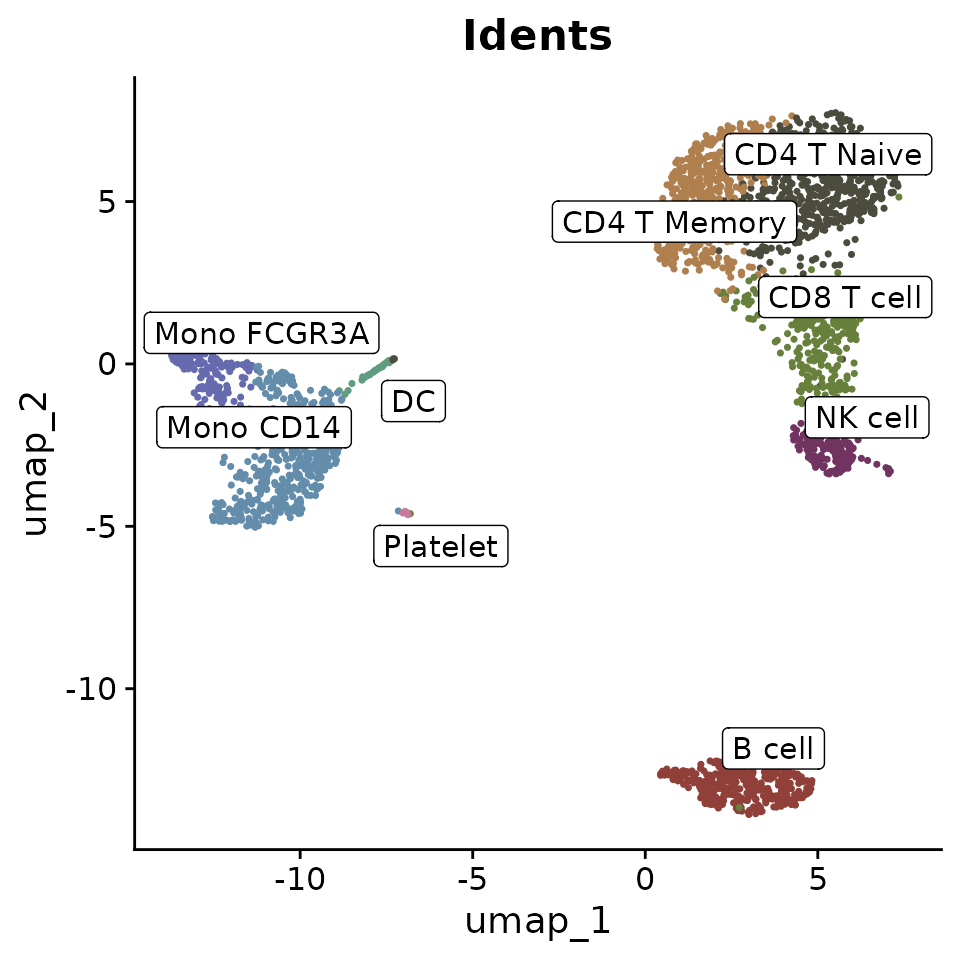
Simplifying Labels with Indices
Sometimes, cluster names are too lengthy and can make the plot appear cluttered when displayed with labels. To address this, consider using indices to replace the cluster names in the plot, which helps make the visualization cleaner. For instance, you can label clusters as ‘C1’, ‘C2’, etc., on the plot itself, while detailing what each index stands for (e.g., ‘C1: B cell’, ‘C2: CD4 T Memory’) in the figure legend:
DimPlot2(pbmc, index.title = "C", box = TRUE, label.color = "black")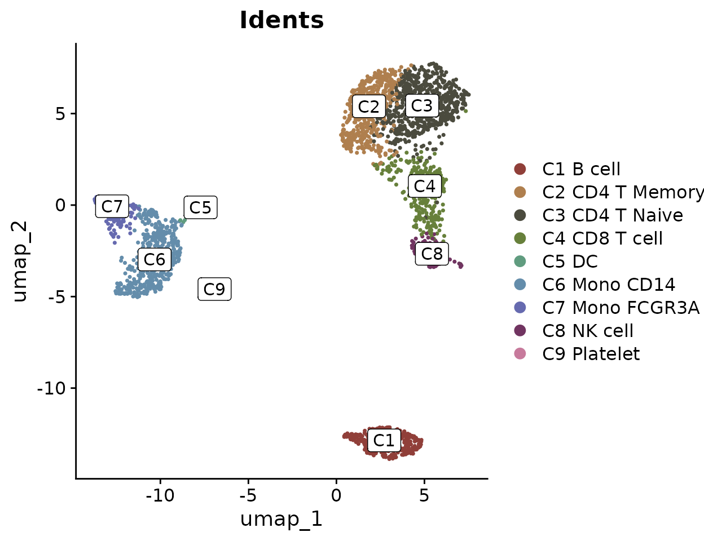
This approach ensures that the plot remains legible and aesthetically pleasing, even when dealing with numerous or complex labels.
Adding UMAP Arrows
Starting from v1.1.0, you can add simplified axis indicators to your
dimension reduction plots using the theme_umap_arrows
function. This is particularly useful for UMAP or t-SNE plots where
traditional axes are often removed to reduce visual clutter:
# Add simplified axis indicators
DimPlot2(
pbmc,
features = c("cluster", "sample", "CD14", "CD3D"),
theme = NoAxes()
) + theme_umap_arrows()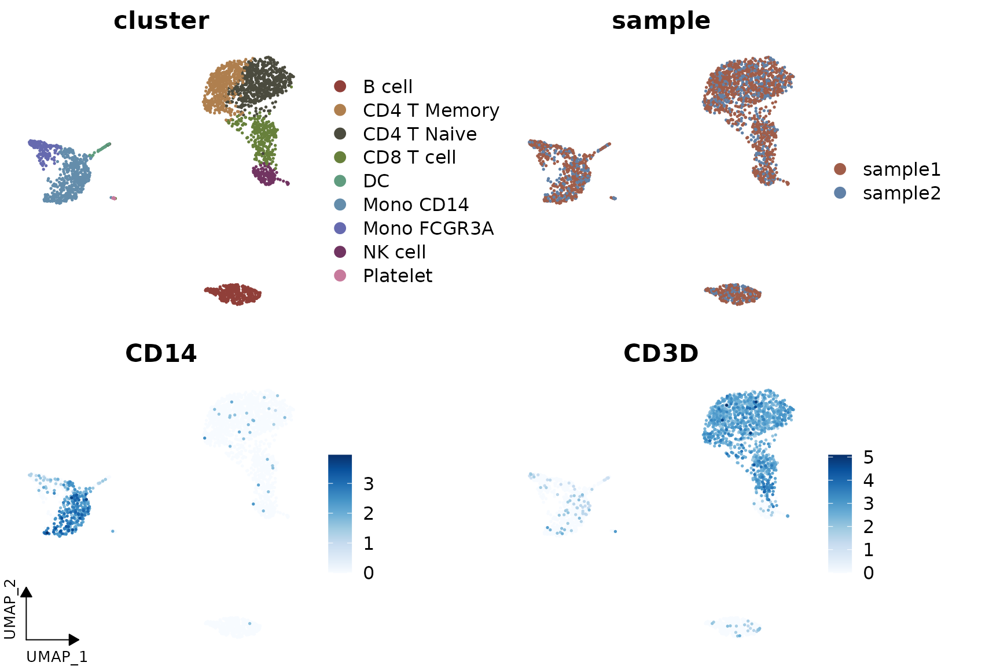
2. Simultaneous Display of Three Features on a Dimension Reduction Plot
In SeuratExtend, a unique visualization method allows
for the simultaneous display of three features on the same dimension
reduction plot. The functions FeaturePlot3 and
FeaturePlot3.grid employ a color mixing system (either RYB
or RGB) to represent three different genes (or other continuous
variables). This method uses the principles of color mixing to
quantitatively display the expression levels or intensities of these
three features in each cell.
RYB and RGB Color Systems
In the RGB system, black represents no or low expression, and
brighter colors indicate higher levels: 
In the RYB system, white represents no expression, and deeper colors
indicate higher expression levels: 
Examples Using RYB and RGB Systems
Here’s how to display three markers using the RYB system, with red for CD3D, yellow for CD14, and blue for CD79A:
FeaturePlot3(pbmc, color = "ryb", feature.1 = "CD3D", feature.2 = "CD14", feature.3 = "CD79A", pt.size = 0.5)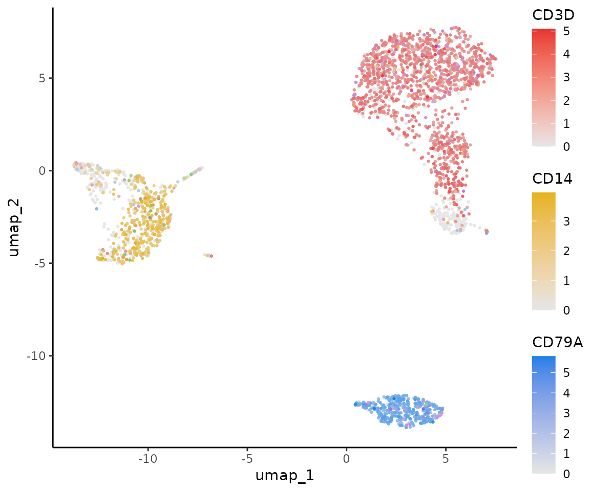
For the RGB system, with red for CD3D, green for CD14, and blue for CD79A:
FeaturePlot3(pbmc, color = "rgb", feature.1 = "CD3D", feature.2 = "CD14", feature.3 = "CD79A", pt.size = 1)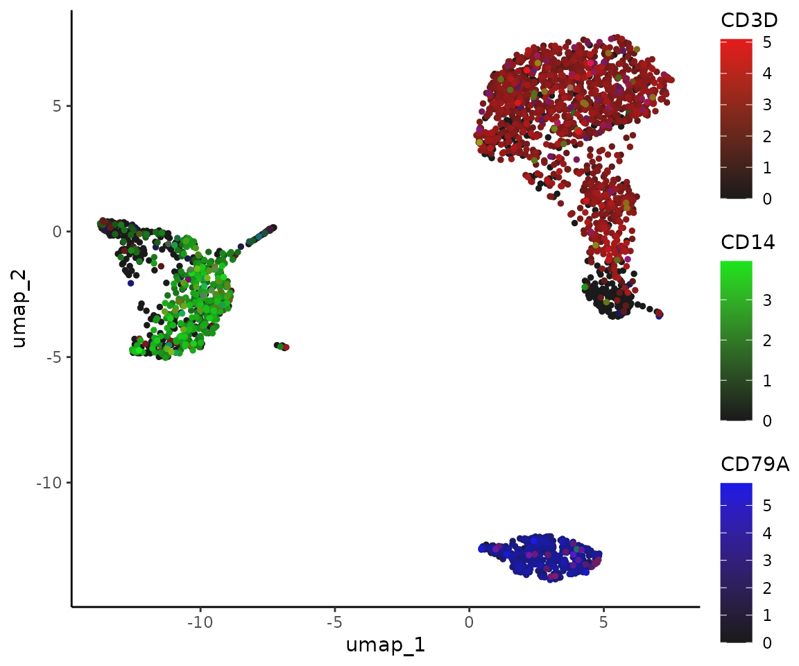
Batch Visualization with FeaturePlot3.grid
FeaturePlot3.grid extends FeaturePlot3 by
allowing multiple plots to be generated in one go. The
features parameter requires a vector where every three
values are assigned a color (RYB or RGB) and placed together in one
plot. If you wish to skip a color, use NA as a
placeholder.
For instance, to place the following five genes into two plots using the RYB system, and skip yellow in the second plot:
FeaturePlot3.grid(pbmc, features = c("CD3D", "CD14", "CD79A", "FCGR3A", NA, "LYZ"), pt.size = 0.5)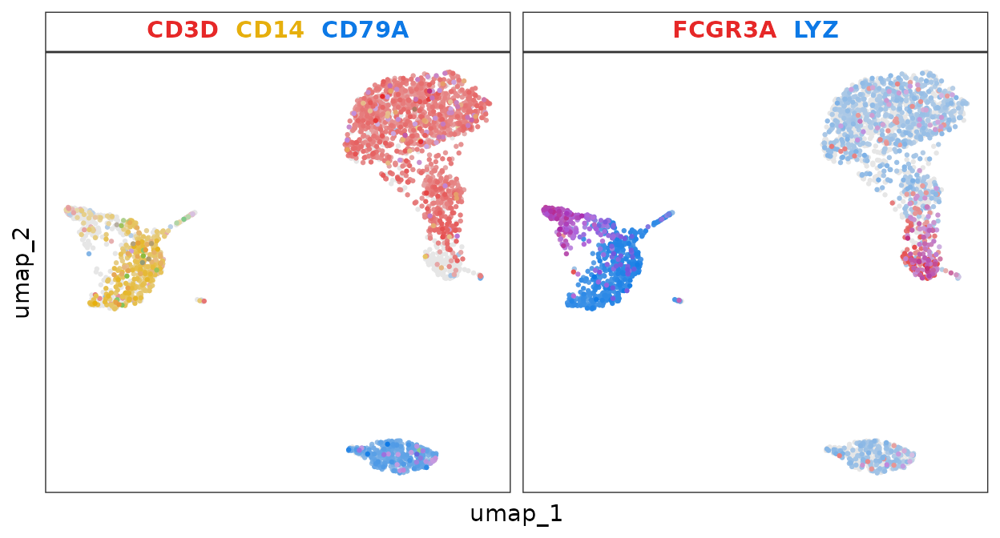
Tips on Point Size
The background is usually white, so the choice of color system and
point size can significantly affect visual perception. In the RYB
system, where higher expression results in darker colors, a smaller
pt.size is preferable to prevent overlapping points. In
contrast, in the RGB system, higher expressions result in lighter
colors, potentially leading to visibility issues for highly expressed
cells that may blend into the white background. Here, a larger
pt.size is recommended so that the darker, low-expression
points can form a “background” to highlight the lighter, high-expression
points.
3. Visualize Cluster Distribution in Samples
Introduction
The ClusterDistrBar function is designed to visualize
the distribution of clusters across different samples. It can show both
absolute counts and proportions, and it allows for various
customizations including axis reversal and normalization.
Basic Usage
To create a basic bar plot showing the distribution of clusters within samples, simply specify the origin (sample identifier) and cluster variables from your dataset:
ClusterDistrBar(origin = pbmc$sample, cluster = pbmc$cluster)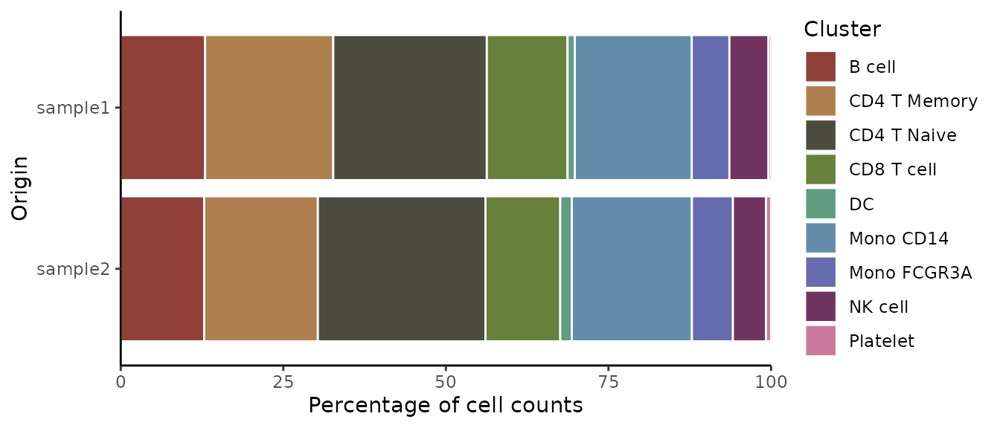
Displaying Absolute Cell Counts
If you prefer to visualize the absolute cell count rather than
proportions, set the percent parameter to
FALSE:
ClusterDistrBar(origin = pbmc$sample, cluster = pbmc$cluster, percent = FALSE)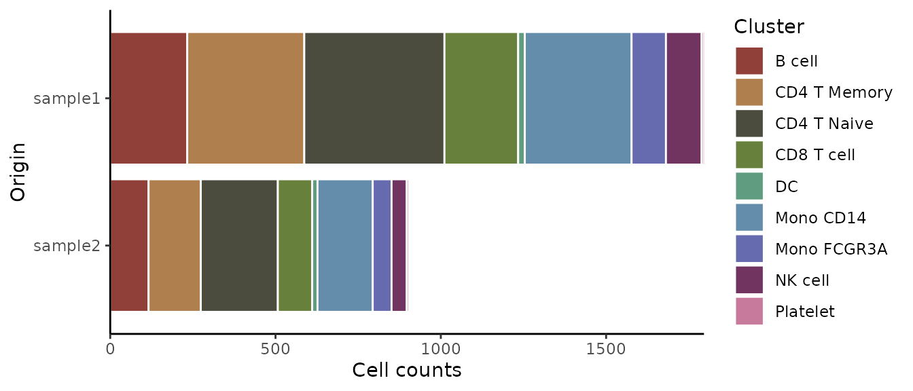
Vertical Bar Plot
If a vertical orientation is preferred over the default horizontal
bars, set the flip parameter to FALSE:
ClusterDistrBar(origin = pbmc$sample, cluster = pbmc$cluster, flip = FALSE, reverse_order = TRUE)
Non-Stacked Bar Plot
If you prefer not to stack the bars, which can be useful for direct
comparisons of cluster sizes across samples, set the stack
parameter to FALSE:
ClusterDistrBar(origin = pbmc$sample, cluster = pbmc$cluster, flip = FALSE, stack = FALSE)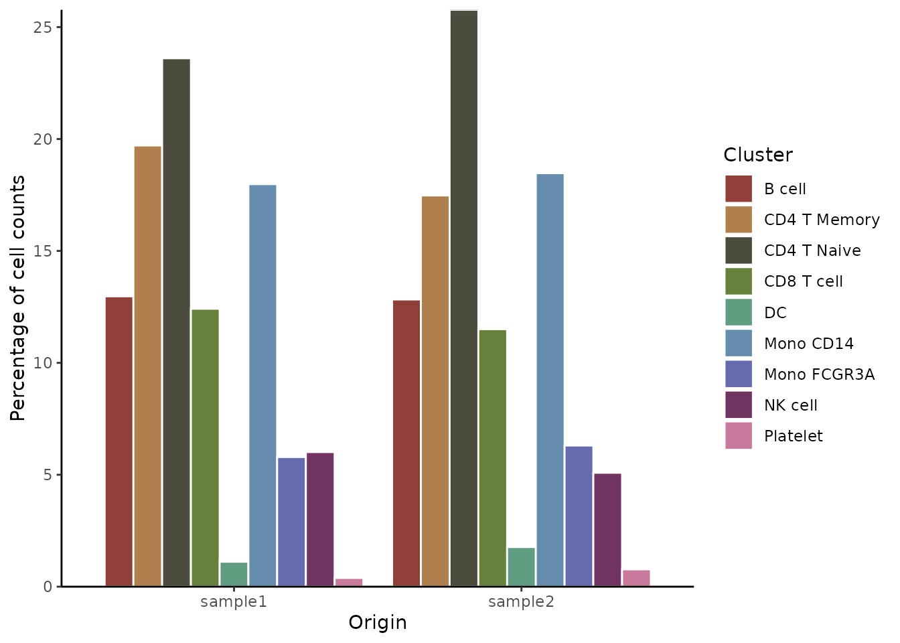
Exporting Data Matrix
In cases where a visual plot is not required and only the underlying
data matrix is needed, set the plot parameter to
FALSE:
data_matrix <- ClusterDistrBar(origin = pbmc$sample, cluster = pbmc$cluster, plot = FALSE)
# View the matrix
print(data_matrix)## sample1 sample2
## B cell 12.973274 12.8318584
## CD4 T Memory 19.710468 17.4778761
## CD4 T Naive 23.608018 25.7743363
## CD8 T cell 12.416481 11.5044248
## DC 1.113586 1.7699115
## Mono CD14 17.984410 18.4734513
## Mono FCGR3A 5.790646 6.3053097
## NK cell 6.013363 5.0884956
## Platelet 0.389755 0.77433634. Create an Enhanced Violin Plot
While DimPlot uses color gradients to represent expression levels,
violin plots offer a more quantitative view of expression distribution.
The enhanced VlnPlot2 function in SeuratExtend integrates
functionalities to superimpose boxplots, easily add statistical
annotations, and offers greater flexibility in plot presentation
compared to the original VlnPlot in Seurat.
The method to employ VlnPlot2 will differ depending on
whether you’re using a Seurat object or a matrix. In this lesson, we’ll
focus on using a Seurat object.
Basic Violin Plot with Box Plot and Points
Let’s start by selecting the genes we want to analyze. Here’s an example using three genes:
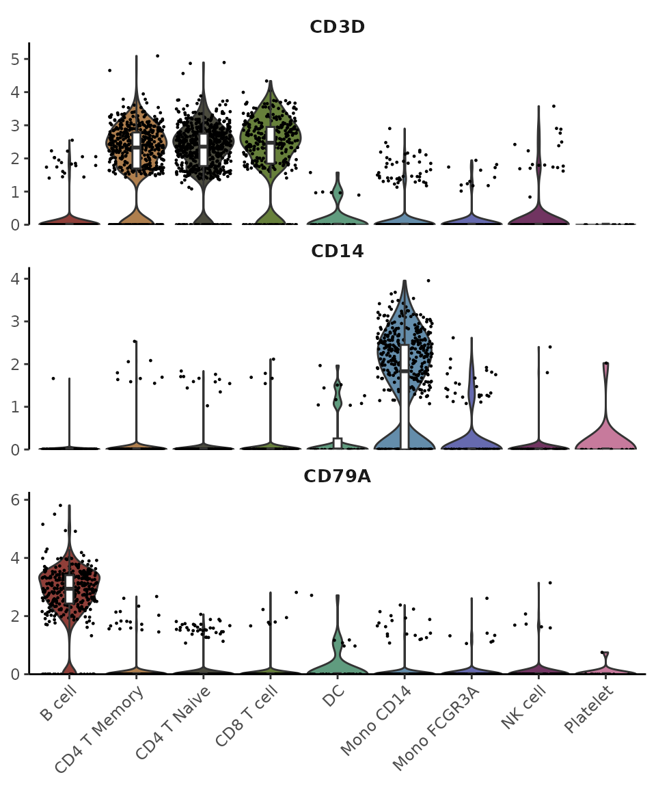
Hide Points and Outliers for a Cleaner Appearance
VlnPlot2(pbmc, features = genes, pt = FALSE, hide.outlier = TRUE, ncol = 1)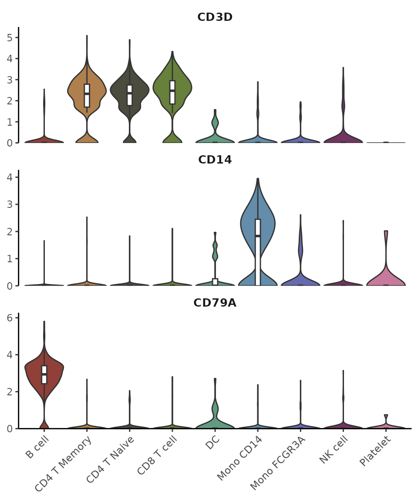
Grouping by Cluster and Splitting Each Cluster by Samples
VlnPlot2(pbmc, features = genes, group.by = "cluster", split.by = "sample")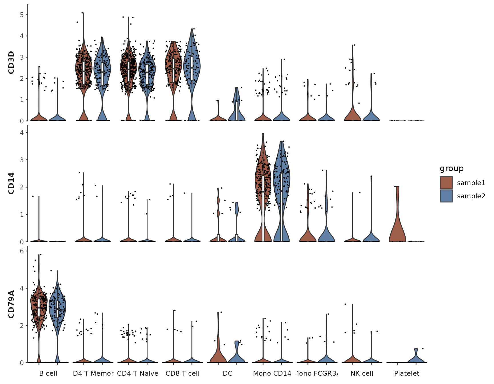
Filtering for Certain Subtypes and Arranging Plots in Columns
cells <- colnames(pbmc)[pbmc$cluster %in% c("B cell", "Mono CD14", "CD8 T cell")]
VlnPlot2(pbmc, features = genes, group.by = "cluster", cells = cells)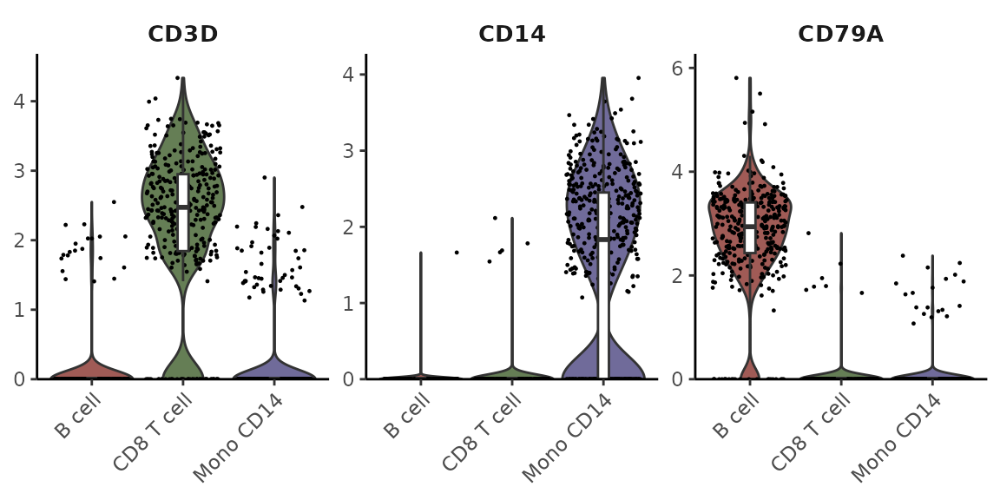
Adding Statistical Annotations Using the Wilcoxon Test
VlnPlot2(pbmc, features = genes, group.by = "cluster", cells = cells,
stat.method = "wilcox.test", hide.ns = TRUE)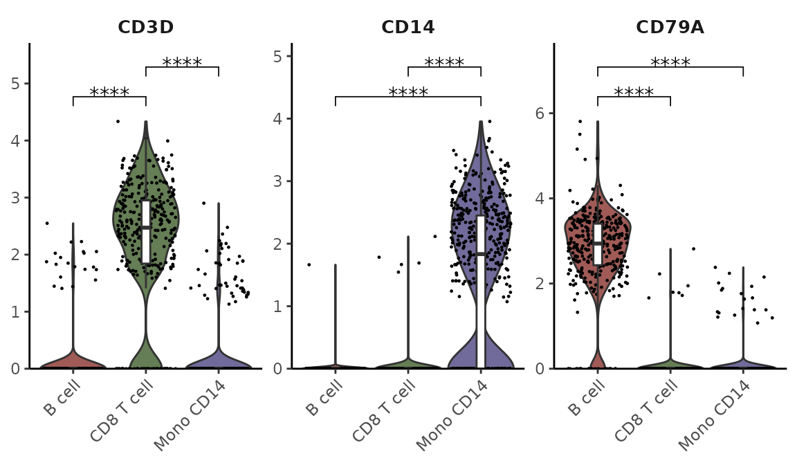
Restricting Statistical Comparisons and Using t-test
VlnPlot2(pbmc, features = genes, group.by = "cluster", cells = cells,
stat.method = "t.test", comparisons = list(c(1,2), c(1,3)), hide.ns = FALSE)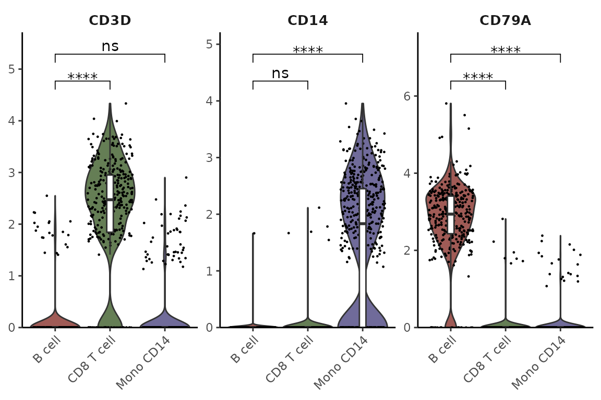
Adding Mean and Median Lines
For genes with low expression where boxplot might be hard to interpret (e.g., when median and quartiles overlap at zero), you can add mean/median lines for better visualization:
lowExprGenes <- c("CCR7", "IL7R", "TCF7")
VlnPlot2(pbmc,
features = lowExprGenes,
show.mean = TRUE, # Show mean and median lines
mean_colors = c("red", "blue"), # Colors for mean and median
cols = "light", # Light color scheme for better visibility
ncol = 1)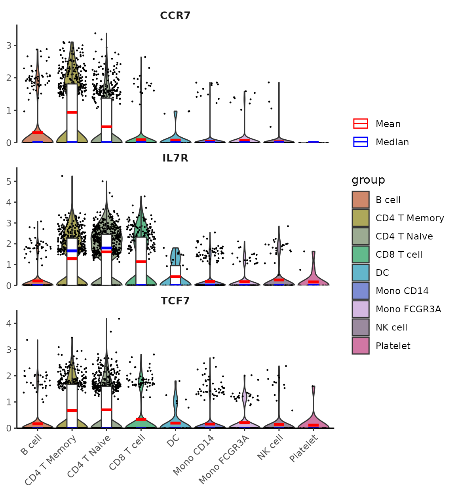
5. Generate a Heatmap Plot
Introduction
The Heatmap function provides a flexible and
comprehensive way to visualize matrices, especially those produced by
the CalcStats function.
Basic Usage
First, let’s generate a sample matrix using the
CalcStats function:
# Assuming pbmc data and VariableFeatures function are available
genes <- VariableFeatures(pbmc)
toplot <- CalcStats(pbmc, features = genes, method = "zscore", order = "p", n = 4)
head(toplot, 10)## B cell CD4 T Memory CD4 T Naive CD8 T cell DC Mono CD14
## CD79A 2.6618127 -0.3562737 -0.3290077 -0.3786881 -0.17755727 -0.3557219
## CD79B 2.4985291 -0.5208352 -0.4673972 -0.3908471 -0.41913798 -0.5194812
## MS4A1 2.6641850 -0.3764259 -0.3706329 -0.3598127 -0.25991613 -0.3741869
## TCL1A 2.6529418 -0.3558571 -0.3687355 -0.3450457 -0.07084613 -0.3691535
## MALAT1 0.5332295 0.8934148 0.5249507 0.8180707 -0.46598087 -0.5652067
## TRABD2A -0.2134085 2.0559473 1.3735467 -0.4193964 -0.45593495 -0.4890393
## MYC 0.6612194 1.7263843 1.1618128 0.2927673 -0.56974739 -0.7537375
## BEX2 0.2726716 1.4948863 1.4176286 0.5119763 -0.81115423 -0.9065074
## LTB 1.3384952 0.9219028 1.4451552 0.1225591 -0.67675218 -0.9194058
## CD2 -0.8215673 0.7197231 1.5507200 1.4481432 -0.38941270 -0.8493816
## Mono FCGR3A NK cell Platelet
## CD79A -0.35728720 -0.34074387 -0.3665329
## CD79B 0.56426973 -0.18106015 -0.5640398
## MS4A1 -0.31198084 -0.33629645 -0.2749332
## TCL1A -0.34902797 -0.36804994 -0.4262259
## MALAT1 -0.07311915 0.58929272 -2.2546517
## TRABD2A -0.39852095 -0.68614635 -0.7670475
## MYC -0.70035646 -0.67417336 -1.1441692
## BEX2 -0.91577760 -0.01463581 -1.0490877
## LTB -0.31365215 -0.87726190 -1.0410403
## CD2 -0.70178407 0.01279555 -0.9692362Now, we can produce a basic heatmap:
Heatmap(toplot, lab_fill = "zscore")
Note that this provides a convenient method to display marker genes (or differentially expressed genes, DEGs) for each cluster, which is very practical. However, this is not the only method. Let’s also learn about Seurat’s built-in method for finding DEGs.
# Find all markers of B cells
bcell.markers <- FindMarkers(pbmc, ident.1 = "B cell", logfc.threshold = 1, only.pos = TRUE)
head(bcell.markers)## p_val avg_log2FC pct.1 pct.2 p_val_adj
## CD79A 0.000000e+00 6.783307 0.934 0.043 0.000000e+00
## MS4A1 0.000000e+00 5.737084 0.860 0.052 0.000000e+00
## LINC00926 2.387605e-276 7.258980 0.562 0.009 3.971542e-272
## CD79B 2.983575e-275 4.595655 0.911 0.143 4.962879e-271
## TCL1A 8.485045e-274 6.612804 0.619 0.022 1.411402e-269
## HLA-DQA1 4.817482e-269 3.984138 0.885 0.118 8.013400e-265This compares all B cells to non-B cells to find DEGs. If you want to
compare B cells with specific clusters, you can set the
ident.2 parameter.
We can also use FindAllMarkers to conveniently generate
marker genes for all clusters:
pbmc.markers <- FindAllMarkers(pbmc, logfc.threshold = 2, only.pos = TRUE)## Calculating cluster B cell## Calculating cluster CD4 T Memory## Calculating cluster CD4 T Naive## Calculating cluster CD8 T cell## Calculating cluster DC## Calculating cluster Mono CD14## Calculating cluster Mono FCGR3A## Calculating cluster NK cell## Calculating cluster Platelet
head(pbmc.markers, 10)## p_val avg_log2FC pct.1 pct.2 p_val_adj cluster gene
## CD79A 0.000000e+00 6.783307 0.934 0.043 0.000000e+00 B cell CD79A
## MS4A1 0.000000e+00 5.737084 0.860 0.052 0.000000e+00 B cell MS4A1
## LINC00926 2.387605e-276 7.258980 0.562 0.009 3.971542e-272 B cell LINC00926
## CD79B 2.983575e-275 4.595655 0.911 0.143 4.962879e-271 B cell CD79B
## TCL1A 8.485045e-274 6.612804 0.619 0.022 1.411402e-269 B cell TCL1A
## HLA-DQA1 4.817482e-269 3.984138 0.885 0.118 8.013400e-265 B cell HLA-DQA1
## VPREB3 6.983605e-238 6.957038 0.484 0.007 1.161653e-233 B cell VPREB3
## HLA-DQB1 3.947592e-234 4.054111 0.862 0.146 6.566424e-230 B cell HLA-DQB1
## CD74 1.691378e-188 3.004657 1.000 0.818 2.813439e-184 B cell CD74
## HLA-DRA 1.834090e-187 2.864834 1.000 0.490 3.050826e-183 B cell HLA-DRACustomizing the Heatmap
Modifying Axis and Labels
Sometimes, the first name on the x-axis might be too long and exceed
the left boundary of the plot. To prevent this issue and ensure all
labels are fully visible, you can increase the space on the left side of
the plot by adjusting the plot.margin parameter:

For denser matrices, you may wish to only show a subset of gene names:
genes <- VariableFeatures(pbmc)[1:500]
toplot2 <- CalcStats(pbmc, features = genes, method = "zscore", order = "p")
Heatmap(toplot2, lab_fill = "zscore", feature_text_subset = genes[1:20], expand_limits_x = c(-0.5, 12))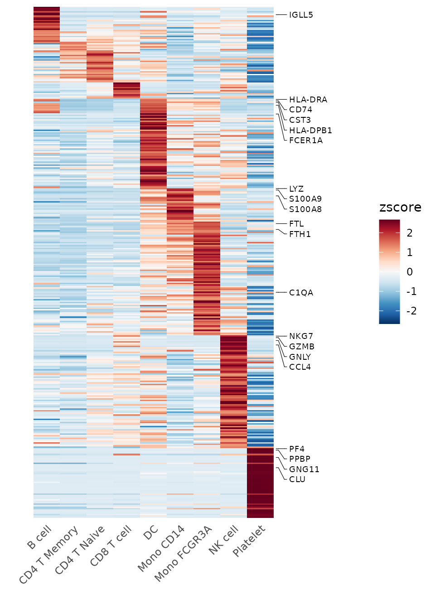
6. Create Enhanced Dot Plots
Introduction
While heatmaps are excellent for visualizing overall patterns, dot plots offer a complementary visualization that combines two key pieces of information: 1. The percentage of cells expressing each feature (represented by dot size) 2. The average expression level in expressing cells (represented by color intensity)
This dual representation can provide more detailed insights than a standard heatmap, particularly when expression patterns vary between cell populations.
Basic Usage
Let’s create a basic dot plot for some variable features:
# Select some variable features
genes <- VariableFeatures(pbmc)[1:10]
DotPlot2(pbmc, features = genes)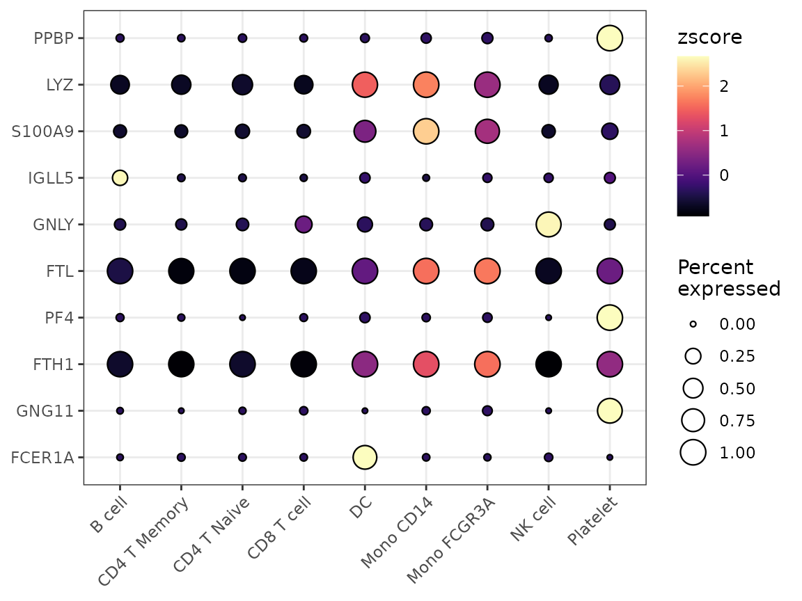
Grouped Features
You can organize features into groups for clearer visualization:
# Create grouped features
grouped_features <- list(
"B_cell_markers" = c("MS4A1", "CD79A"),
"T_cell_markers" = c("CD3D", "CD8A", "IL7R"),
"Myeloid_markers" = c("CD14", "FCGR3A", "S100A8")
)
DotPlot2(pbmc, features = grouped_features)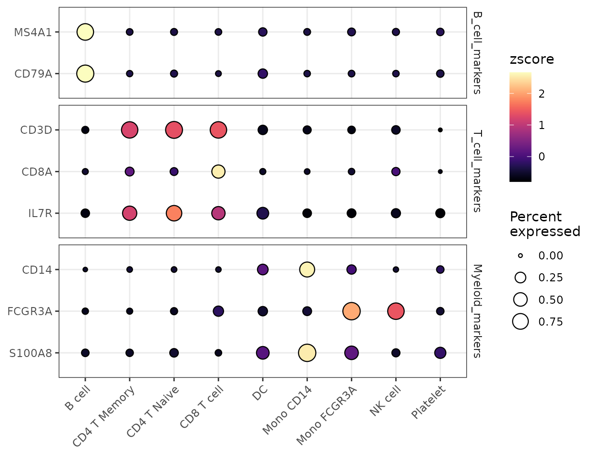
Split Visualization
You can split the visualization by a metadata column to compare expression patterns across different conditions:
# Basic split visualization
DotPlot2(pbmc, features = genes, group.by = "cluster", split.by = "orig.ident", show_grid = FALSE)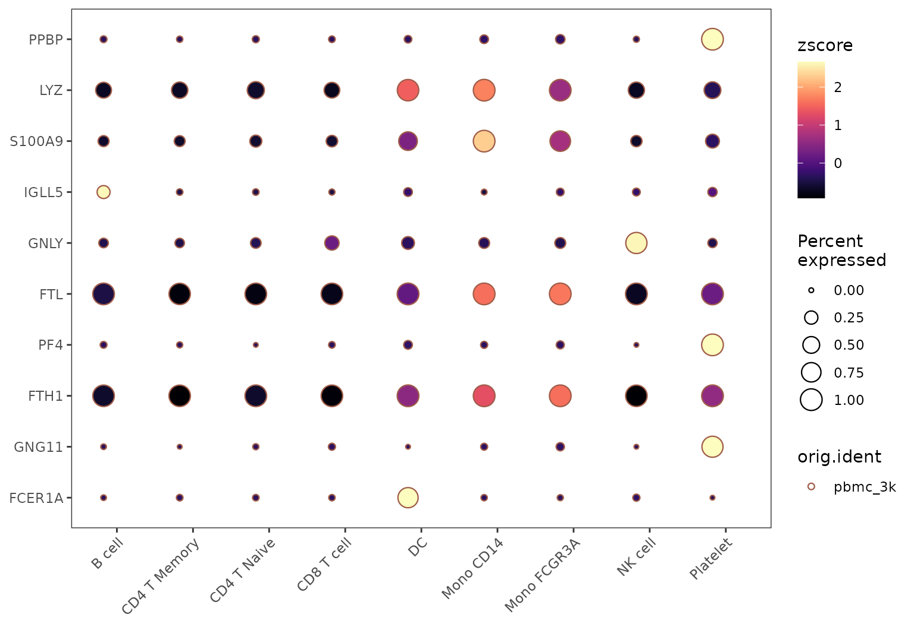
Alternative Split Visualization
The split groups can be represented either by border colors (default) or by dot colors:
# Using colors instead of borders for split groups
DotPlot2(pbmc,
features = genes,
group.by = "cluster",
split.by = "orig.ident",
split.by.method = "color",
show_grid = FALSE)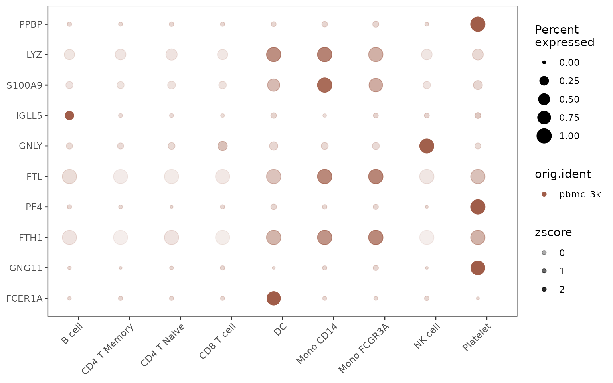
Customizing Appearance
You can customize various aspects of the plot, including color schemes, dot sizes, and grid lines:
DotPlot2(pbmc,
features = grouped_features,
color_scheme = "BuRd",
border = FALSE, # Remove dot borders
show_grid = FALSE, # Remove grid lines
flip = TRUE) # Flip coordinates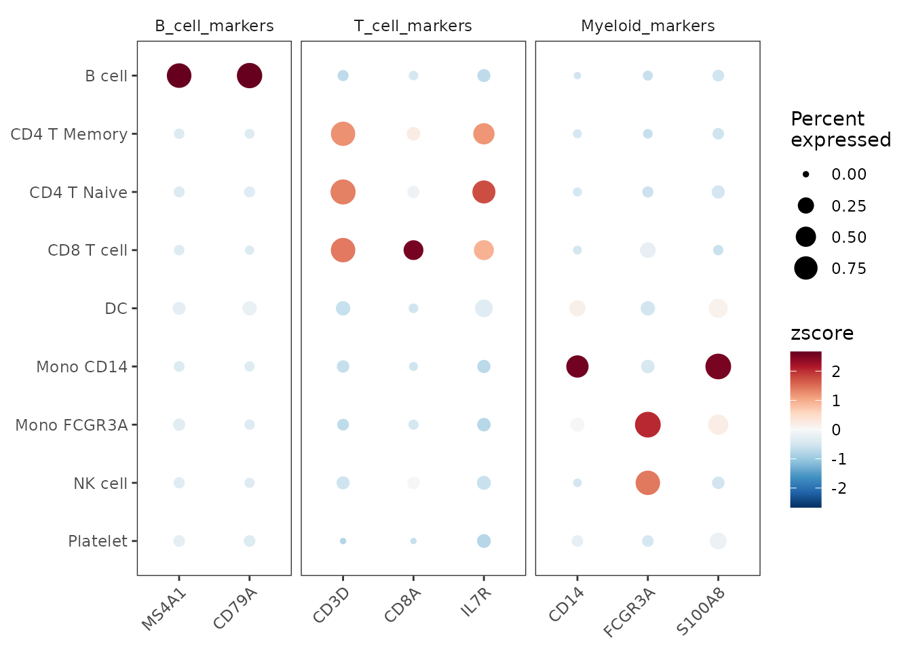
7. Generate a Waterfall Plot
Introduction
Waterfall plots are powerful visualization tools that can display differences between two conditions, showing gene expression, gene set enrichment, or other metrics. This function can handle inputs directly from Seurat objects or pre-processed matrices.
You can use the waterfall plot to compare expression levels of genes directly from a Seurat object, using LogFC to determine the bar length. Here’s how to do it for the top 80 variable features:
genes <- VariableFeatures(pbmc)[1:80]
WaterfallPlot(
pbmc, group.by = "cluster", features = genes,
ident.1 = "Mono CD14", ident.2 = "CD8 T cell", length = "logFC")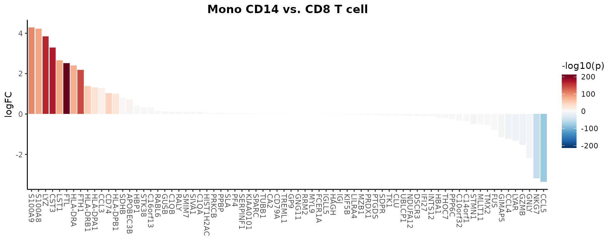
Focusing on Extremes
To further hone in on the most differentially expressed genes, you might want to keep only the top and bottom 20 genes. This can highlight the most critical differences between the two cell types:
WaterfallPlot(
pbmc, group.by = "cluster", features = genes,
ident.1 = "Mono CD14", ident.2 = "CD8 T cell", length = "logFC",
top.n = 20)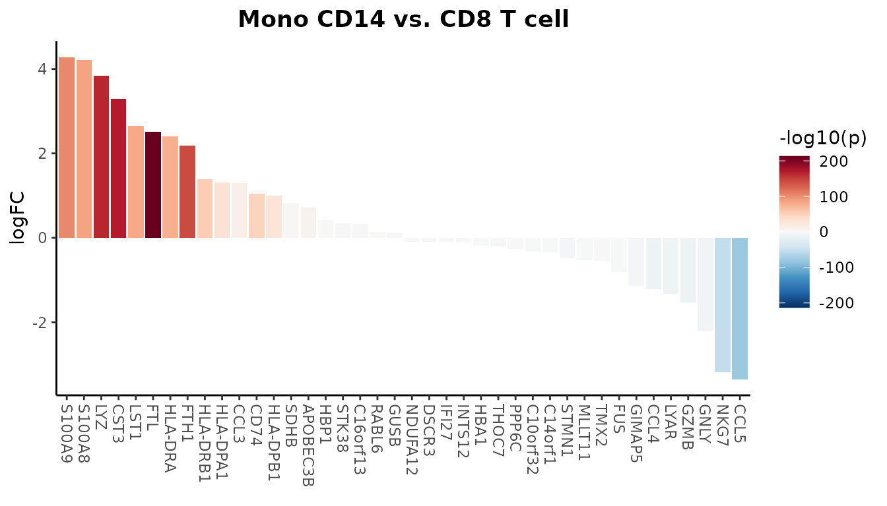
Additionally, you can set parameters to modify the plot, such as
filtering features based on a specific threshold, rotating the plot 90
degrees (by setting flip), and more. For detailed options,
refer to the function’s help documentation.
8. Create Volcano Plots
Introduction
The Volcano plot is a specialized variation of the scatter plot that combines statistical significance (-log10 p-value) with magnitude of change (typically log fold change). While Waterfall plots focus on ordered visualization of differences, Volcano plots provide a comprehensive view of both the magnitude and statistical significance of changes.
Basic Usage
Create a basic volcano plot comparing two cell types:
VolcanoPlot(pbmc,
ident.1 = "B cell",
ident.2 = "CD8 T cell")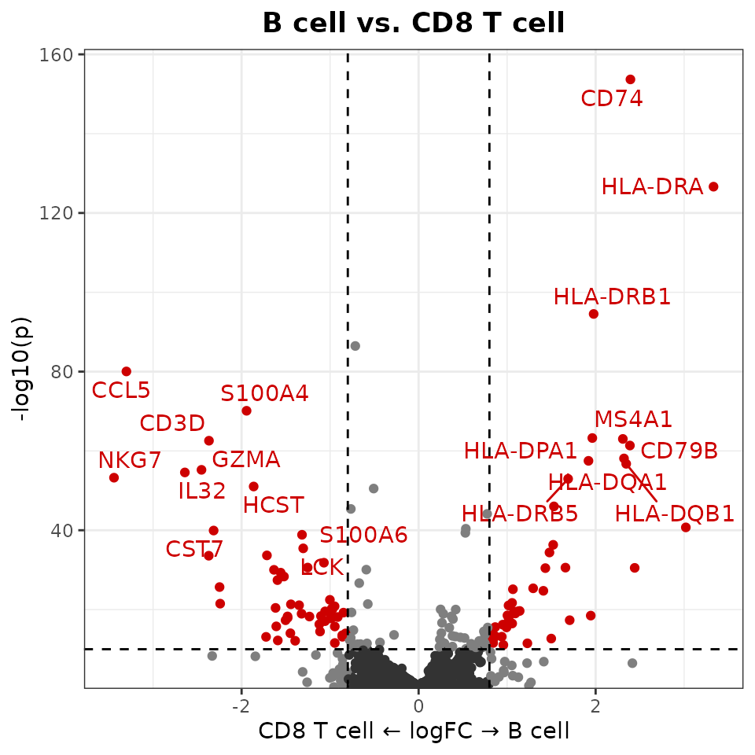
Customizing Thresholds
You can set custom thresholds for both axes:
VolcanoPlot(
pbmc,
ident.1 = "B cell",
ident.2 = "CD8 T cell",
x.threshold = 0.5, # Log fold change threshold
y.threshold = 2 # -log10(p-value) threshold
)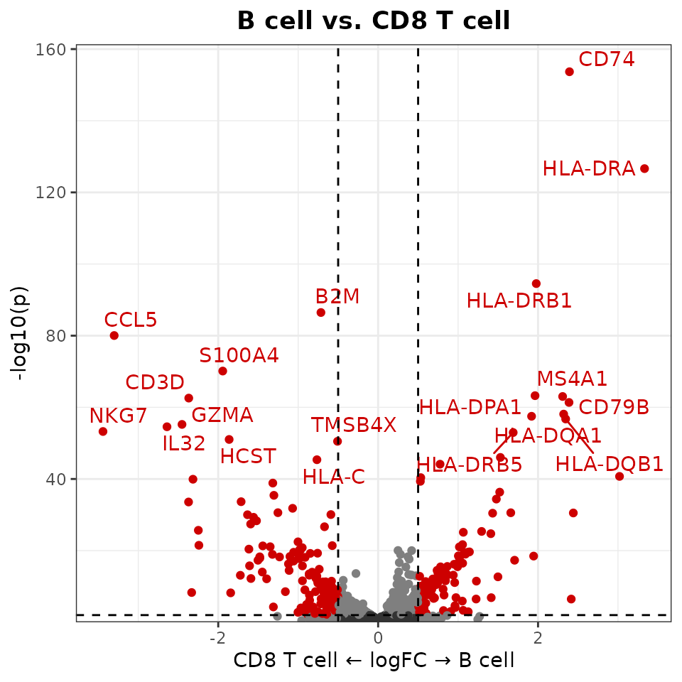
9. Tips: Choosing the Right Visualization
When visualizing gene expression or pathway activity data, different plot types serve different purposes. Here’s a guide to help you choose:
- Overview Visualizations:
-
Heatmaps:
- Best for: Comparing many features across multiple groups using color intensity
- Advantage: Compact visualization of large-scale patterns
- Limitation: Color intensity alone may not show detailed expression patterns
-
Dot Plots:
- Best for: Similar to heatmaps but with additional information
- Advantage: Shows both expression level (color) and percent expressing cells (size)
- Limitation: Takes more space than heatmaps
-
Heatmaps:
- Two-Group Comparisons:
-
Waterfall Plots:
- Best for: Ordered visualization of differences between two groups
- Advantage: Clear ranking of most differential features
- Limitation: Limited to two-group comparisons
-
Volcano Plots:
- Best for: Combining fold change with statistical significance
- Advantage: Shows both effect size and significance
- Limitation: Also limited to two-group comparisons
-
Waterfall Plots:
- Detailed Expression Analysis:
-
Violin Plots:
- Best for: Detailed view of expression distribution
- Advantage: Shows full distribution shape and statistical comparisons
- Limitation: Space-intensive, limiting the number of features that can be shown
-
Violin Plots:
10. Explore Color Functions
The SeuratExtend package provides comprehensive color
management across all visualization functions. Each function type
handles colors slightly differently depending on whether it’s dealing
with discrete or continuous variables.
For more detailed information, refer to the online tutorial: https://huayc09.github.io/SeuratExtend/articles/Visualization.html#explore-color-functions
Recommended Color Schemes
Here are some recommended color schemes for different visualization needs in single-cell analysis:
For Discrete Variables (e.g., clusters, conditions)
The “light” color scheme from SeuratExtend’s color_pro
is particularly effective for labeled visualizations:
library(cowplot)
plot_grid(
DimPlot2(pbmc, cols = "light", theme = NoAxes() + NoLegend()),
ClusterDistrBar(pbmc$orig.ident, pbmc$cluster, cols = "light", flip = FALSE, border = "black") +
theme(axis.title.x = element_blank())
)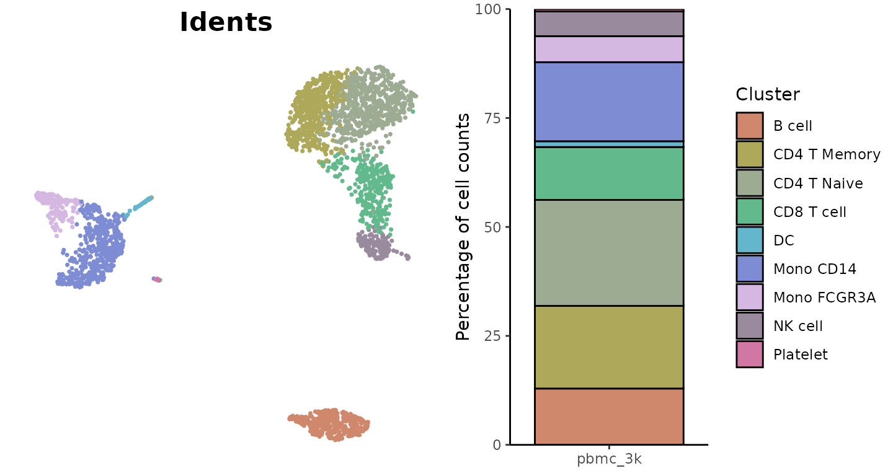
For Continuous Variables (e.g., gene expression)
the “A” or “D” color schemes from viridis:
Heatmap(toplot, lab_fill = "zscore", color_scheme = "A")
WaterfallPlot(
pbmc, group.by = "cluster", features = VariableFeatures(pbmc)[1:80],
ident.1 = "Mono CD14", ident.2 = "CD8 T cell", length = "logFC",
top.n = 20, color_theme = "D")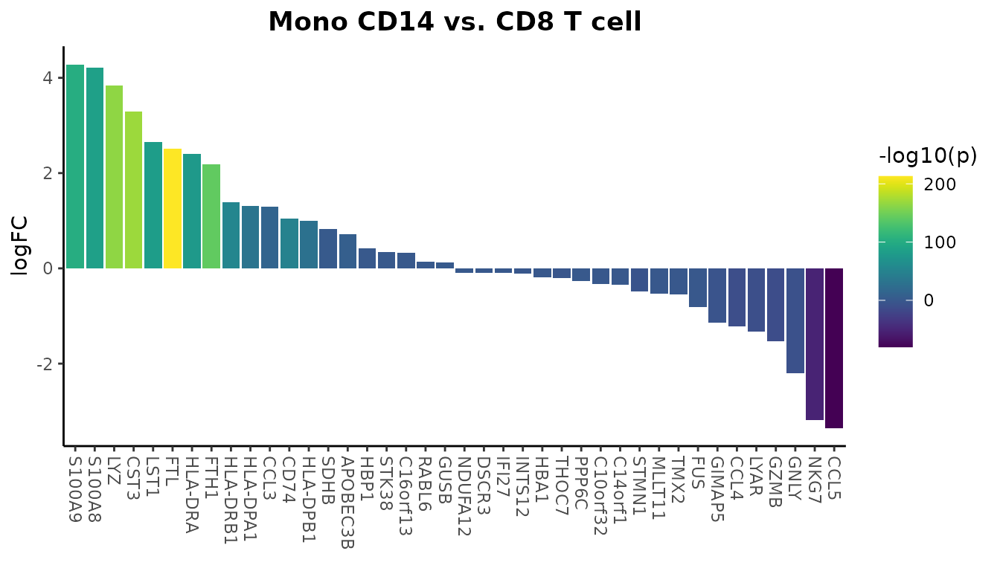
You can also use various color palettes from RColorBrewer (https://r-graph-gallery.com/38-rcolorbrewers-palettes.html):
library(RColorBrewer)
markers_genes <- c(
"MS4A1", "GNLY", "CD3E",
"CD8A", "CCR7", "CD14",
"FCER1A", "FCGR3A", "PPBP")
DimPlot2(
pbmc,
features = markers_genes,
cols = "OrRd",
theme = NoAxes())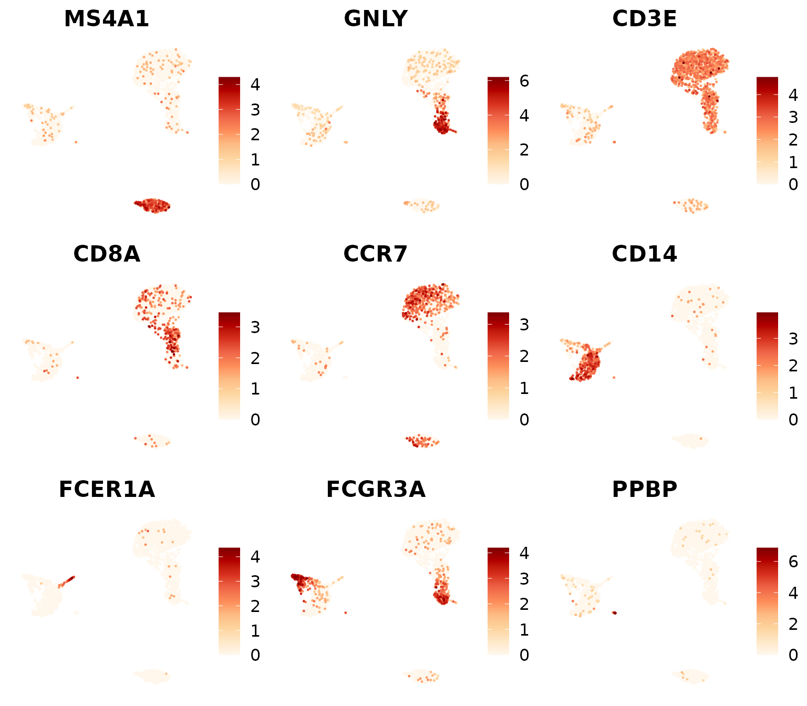
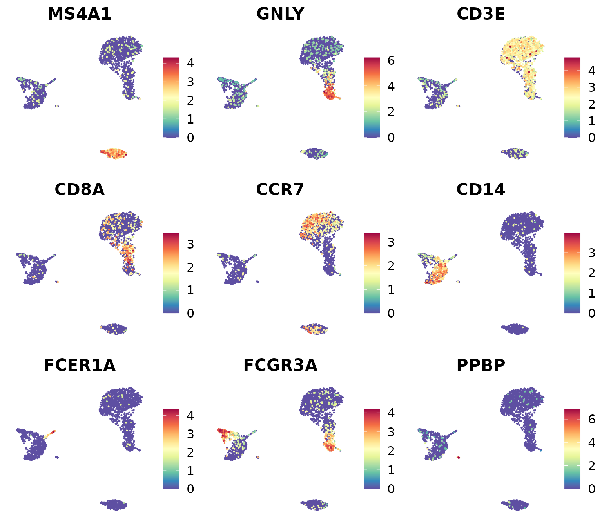
11. Mastering ggplot2 for Custom Visualizations
Introduction to ggplot2
While SeuratExtend provides many convenient functions
for visualization, all of these are built on top of
ggplot2. Understanding ggplot2 can give you
more flexibility in customizing your plots and creating entirely new
visualizations. In this section, we’ll cover the basics of
ggplot2 and how to use it with Seurat data.
The Grammar of Graphics
ggplot2 is based on the Grammar of Graphics, a layered approach to creating visualizations. The basic components are:
- Data: The dataset you want to visualize
- Aesthetics: How your data maps to visual properties (position, color, size, etc.)
- Geometries: The actual shapes used to represent your data (points, lines, bars, etc.)
- Facets: Optional subdivision of the plot into multiple plots
- Statistics: Optional statistical transformations of the data
- Coordinates: The space on which the data will be plotted
- Themes: All non-data ink
Creating a Basic Plot from Seurat Data
Let’s start by creating the most basic UMAP plot using ggplot2:
# Extract data from the Seurat object
umap_data <- FetchData(pbmc, vars = c("umap_1", "umap_2", "cluster", "CD3D", "sample"))
head(umap_data)## umap_1 umap_2 cluster CD3D sample
## AAACATACAACCAC-1 4.075107 3.848914 CD4 T Naive 2.863463 sample1
## AAACATTGAGCTAC-1 4.548936 -12.860142 B cell 0.000000 sample1
## AAACATTGATCAGC-1 7.082211 5.789762 CD4 T Naive 3.489090 sample1
## AAACCGTGCTTCCG-1 -11.915672 -1.153419 Mono FCGR3A 0.000000 sample1
## AAACCGTGTATGCG-1 4.301518 -2.344230 NK cell 0.000000 sample1
## AAACGCACTGGTAC-1 3.169024 6.136975 CD4 T Naive 1.726522 sample1
# Create the most basic plot
ggplot(umap_data, aes(x = umap_1, y = umap_2, color = CD3D)) +
geom_point()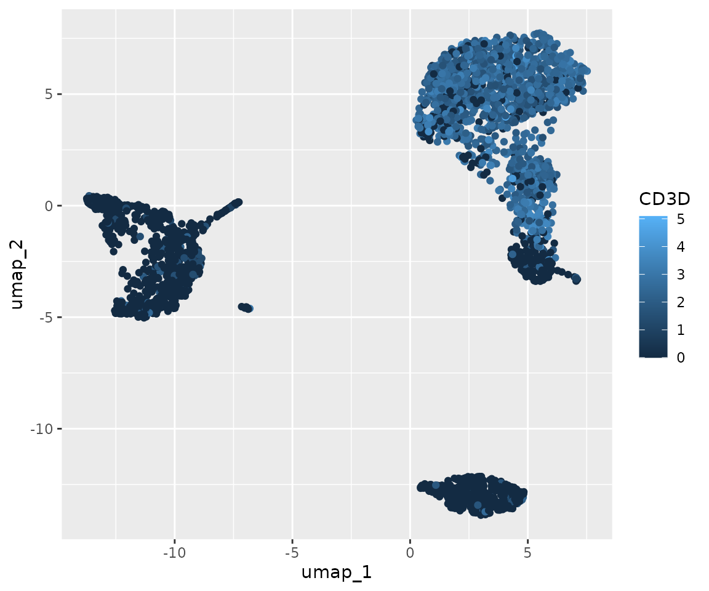
This is the most basic plot we can create. It shows the UMAP coordinates of our cells, colored by CD3D expression. However, it’s not very visually appealing or informative in its current state. Let’s improve it step by step:
# Create an improved plot
library(viridis)
ggplot(umap_data, aes(x = umap_1, y = umap_2, color = CD3D)) +
geom_point(size = 0.5, alpha = 0.7) +
scale_color_viridis() +
theme_minimal() +
labs(title = "UMAP colored by CD3D expression",
x = "UMAP_1", y = "UMAP_2")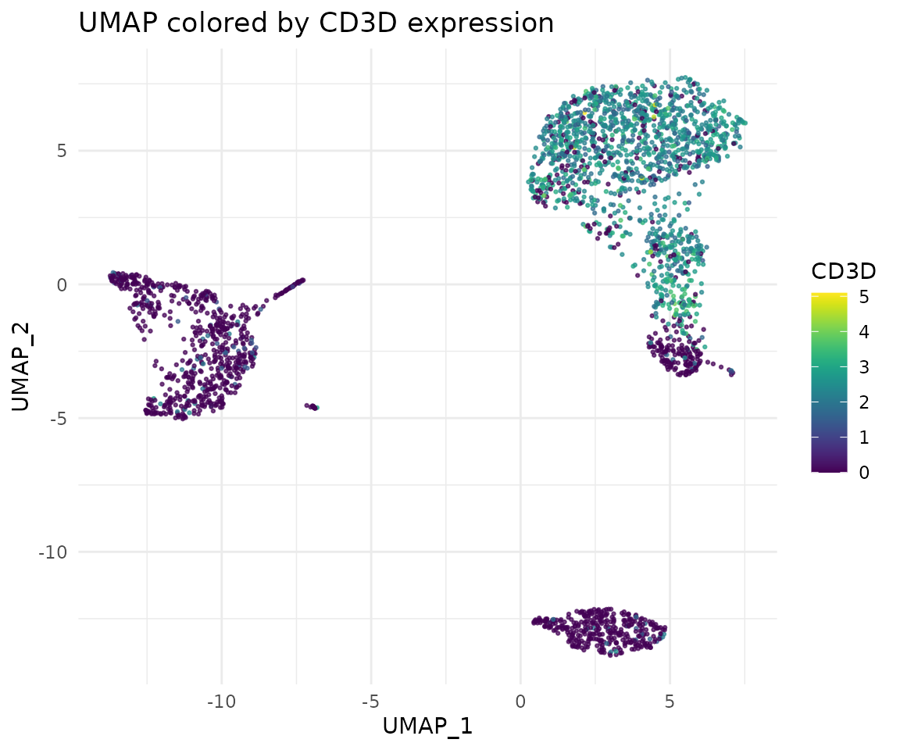
Let’s break down the improvements we made:
- We adjusted the size and transparency of the points using
size = 0.5, alpha = 0.7ingeom_point(). This helps to visualize dense areas better. - We used
scale_color_viridis()to apply a colorblind-friendly, perceptually uniform color scale. - We applied
theme_minimal()to remove unnecessary plot elements and give it a cleaner look. - We added a title and axis labels using
labs().
These small changes significantly improve the readability and aesthetics of our plot. In the following sections, we’ll explore even more ways to customize and enhance our visualizations.
Customizing the Plot
Now let’s customize our plot further:
ggplot(umap_data, aes(x = umap_1, y = umap_2, color = CD3D)) +
geom_point(size = 0.5, alpha = 0.7) +
scale_color_viridis(option = "A") +
facet_wrap(~sample, ncol = 3) +
theme_bw() +
theme(axis.text = element_blank(),
axis.ticks = element_blank(),
panel.grid = element_blank(),
strip.background = element_rect(fill = "white"),
strip.text = element_text(face = "bold")) +
labs(title = "UMAP by cluster, colored by CD3D expression",
x = "UMAP_1", y = "UMAP_2")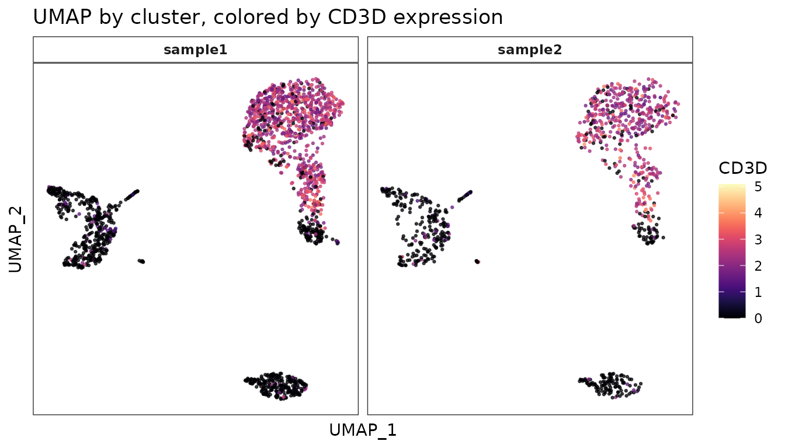
In this version:
- We’ve used
facet_wrap()to create separate plots for each cluster. - We’ve customized the theme further using
theme()to remove axis text, ticks, and grid lines. - We’ve styled the facet labels with a white background and bold text.
Combining Multiple Plots
Often, we want to combine multiple plots into a single figure. The
cowplot package is great for this:
library(cowplot)
# Create two plots
plot1 <- ggplot(umap_data, aes(x = umap_1, y = umap_2, color = cluster)) +
geom_point(size = 0.5, alpha = 0.7) +
scale_color_manual(values = color_pro(9,2)) +
theme_minimal() +
theme(legend.position = "none") +
labs(title = "Clusters")
plot2 <- ggplot(umap_data, aes(x = umap_1, y = umap_2, color = CD3D)) +
geom_point(size = 0.5, alpha = 0.7) +
scale_color_viridis_c(option = "A") +
theme_minimal() +
labs(title = "CD3D Expression")
# Combine plots
combined_plot <- plot_grid(plot1, plot2, labels = c("A", "B"), ncol = 2)
# Add a title to the combined plot
title <- ggdraw() +
draw_label("UMAP Visualization of PBMC Data", fontface = "bold", x = 0, hjust = 0) +
theme(plot.margin = margin(0, 0, 0, 7))
plot_grid(title, combined_plot, ncol = 1, rel_heights = c(0.1, 1))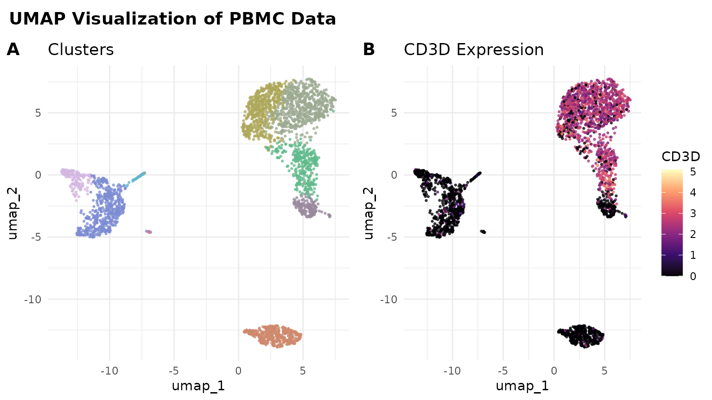
Saving Your Plots
Finally, let’s save our plot using ggsave():
dir.create("results", showWarnings = FALSE)
ggsave("results/pbmc_umap_plot.png", combined_plot, width = 8, height = 4.5, dpi = 300)This will save the plot as a high-resolution PNG file.
Tips for Further Customization
Remember, while ggplot2 offers extensive customization options, it can sometimes be complex. Don’t hesitate to consult the ggplot2 documentation, online resources, or AI assistants like Claude or ChatGPT for help with specific customizations.
This concludes our lesson on advanced visualization techniques. You now have a solid foundation in creating and customizing plots for your single-cell RNA-seq data analysis. In the next lesson, we’ll explore more advanced analytical techniques to further your understanding of single-cell data.